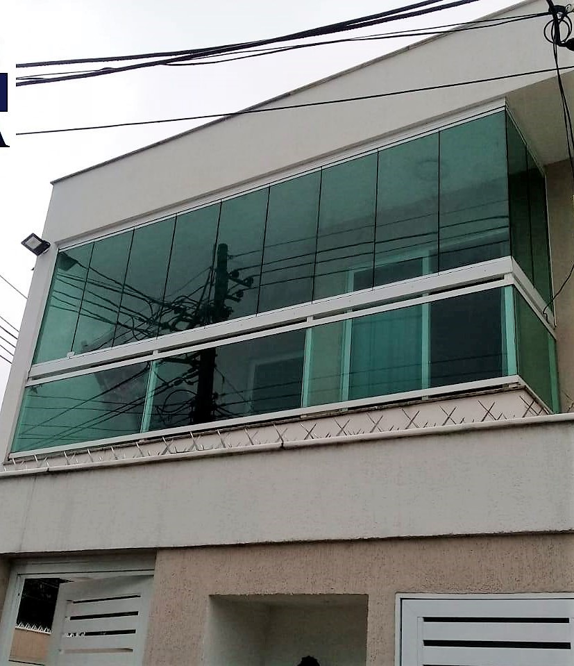

<main class="d-flex">
  <div  class="carousel slide" data-bs-ride="carousel">
    <div class="carousel-inner">
      <div class="carousel-item active">
        
      </div>
    </div>
  </div>
</main>
